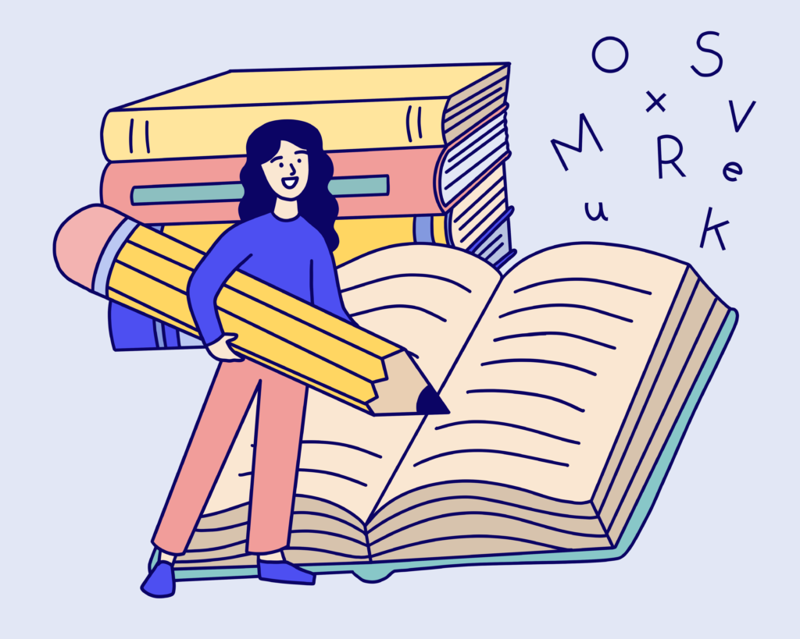

Conceptos basicos

Ortografía (del griego orthós, recto, justo y graphía, escritura), es la parte de la
Gramática que enseña a escribir correctamente.
La Ortografía, como elemento sustentable en la elaboración de documentación,
resulta de gran utilidad para producir elementos de calidad en nuestro quehacer
diario e institucional.
La Reglas de Puntuación y Acentuación.
Llevan acento ortográfico:
*Las palabras agudas terminadas en vocal y en consonantes n, s, o vocal.
Ejemplos: Café, compás, león, manatí.
* Las palabras graves o llanas terminadas en consonante que no sean:
n, s, o vocal.
Ejemplos: árbol, cáliz, carácter.
* Todas las palabras esdrújulas y sobre-esdrújulas
(se acentúan ortográficamente).
Ejemplos: cántaro, húmedo, héroe, últimamente, dígaselo.
Excepcionales más importantes del acento:
Los monosílabos no llevan acento, excepto:
a) Sí (adverbio de afirmación, nombre, pronombre), para no confundirlo con
(si) (conjunción). Ejemplo: ¡Si me dices que sí, vendrás de paseo!
b) Dé y sé (verbos), para no confundirlos con (de) preposición y (se) pronombre.
Ejemplo: Es mejor que Laura te dé la información. Sé muy bien que ella es
feliz.
c) (Él-tú-mí) pronombres para no confundirlos con (el) artículo y (tu-mi) adjetivos.
Ejemplo: ¿Tú quieres ir? Eso es para mí. Mi desempeño es el mejor. Tu bolso
es lindo.
d) Más (adverbio), para no confundirlo con mas (conjunción)
Ejemplo: Quiero más pan, mas no tostado.
e) La conjunción (o) llevará acento cuando esté colocada entre números, para no
confundirla con el 0.
Ejemplo: Tengo 8 ó 9 estampas.- Iré hoy o mañana
f) Aún (adverbio de tiempo) llevará acento cuando sea sinónimo de todavía.
Ejemplos:
El yate no ha venido aún al puerto.
Aún no he recibido noticias de su regreso
Me dijo que, el empleo aún no es mío
El documento de confirmación aún no me lo entregan
aun– no lleva tilde cuando es sustituible por: hasta, inclusive, incluso,
también, (ni) siquiera.
Ejemplos:
Le votaron tanto socialistas como liberales, y aun algunos de la derecha.
Sus jefes le ordenaron quedarse en el lugar de los hechos, aun en caso de no
solicitar su presencia.
El aprendizaje de la Ortografía es indispensable, aun en actividades no
referentes a la Lingüística.
Se reunió toda la familia, aun los familiares que se encontraban en el interior
de la República.
Aun tampoco lo lleva cuando tiene valor concesivo, tanto en la locución
conjuntiva aun cuando, como si va seguido de un adverbio o de un gerundio.
Ejemplos:
Aun cuando / aunque se prepare bien, no aprobará.
Aun cuando me lo pidiera de rodillas, no le haría caso.
Aun no estando presente en la reunión, fue criticado por todos.
Aun los sordos habrán de oírme.
Esto lo sabe aun un niño de escuela.
Votaron por los socialistas aun los más conservadores.
g) Las palabras qué, quién, cuán, cuándo, dónde, cómo, llevarán acento
siempre que se usen en forma admirativa, interrogativa o dubitativa.
Ejemplo: ¡Cuánta gente en la calle!, ¿Quién llama?, ¡No sé, cómo decírtelo!,
¿Dónde vives?
h) Cuando la palabra termina en io, ia, sobre la i, o, u colocaremos un acento,
deshaciéndose, el diptongo o a- diptongo. Ejemplo: Alegría, caserío, gentío,
María, Raúl, Baúl.
i) Excepto las palabras graves, terminadas en éstas vocales.
Ejemplo: guardia, garfio, media, radio, feria.